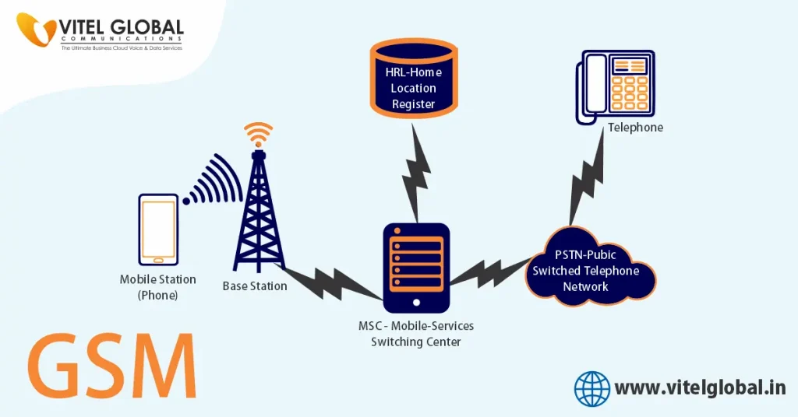
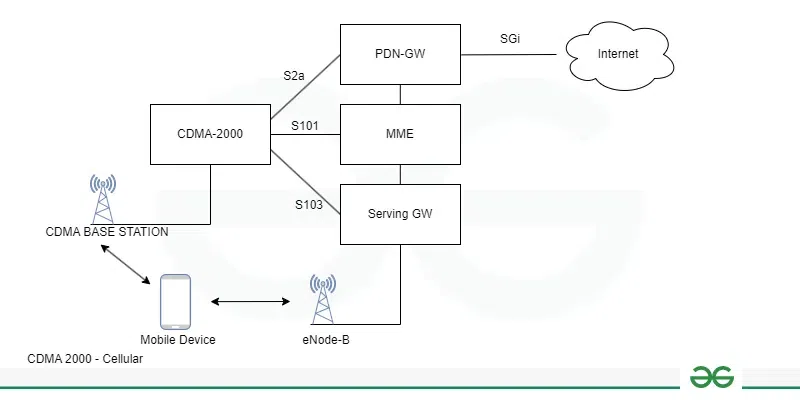
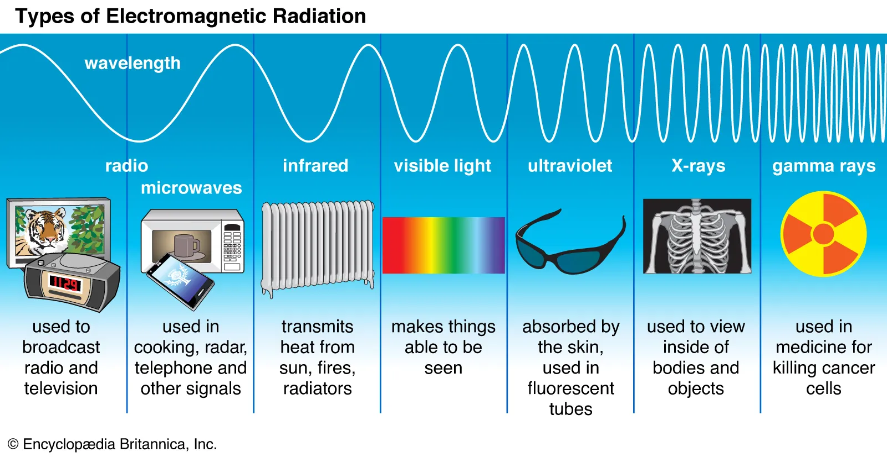

WT
Draw and explain 4G/LTE architecture with its specifications. (10 / Dec 23) (10 / May 23) (10 / Dec 22)

| Specification | Description |
|---|---|
| Technology | Primarily LTE (Long Term Evolution) |
| Frequency Bands | 2 GHz - 8 GHz (varies by region and carrier) |
| Bandwidth | 5 MHz - 20 MHz (can be aggregated for higher speeds) |
| Maximum Downlink Data Rate | Up to 1 Gbps (theoretical) |
| Typical Downlink Data Rate | 10 - 100 Mbps (depending on network congestion and carrier) |
| Maximum Uplink Data Rate | Up to 150 Mbps (theoretical) |
| Typical Uplink Data Rate | 5 - 50 Mbps (depending on network congestion and carrier) |
| Access Method | OFDMA (Orthogonal Frequency-Division Multiple Access) |
| Latency | Lower than 3G (around 50 milliseconds) |
| Features | * Packet Switched Network * Improved Voice over IP (VoIP) * Mobile Broadband * High-Speed Data Streaming |
Explain Zigbee protocol stack (10 / Dec 23) (10 / May 23) (10 / Dec 22)

Zigbee is a wireless communication protocol designed for low-cost, low-power machine-to-machine (M2M) and Internet of Things (IoT) networks.
- Application: This layer specifies how applications interact with the Zigbee network.
- ZigBee Specifiication: is a set of detailed instructions that define how devices using the Zigbee protocol should communicate and work together.
- Application Interface (API): This layer provides a set of services that applications can use to communicate with the Zigbee network.
- Security Services: This layer specifies the security services that are available to Zigbee devices.
- Key Management: This refers to the practices and processes involved in handling cryptographic keys.
- Confidentiality: This principle ensures that only authorized users can access sensitive information.
- Integrity: This principle ensures that data hasn't been altered or tampered with during transmission or storage.
- Network Layer: This layer is responsible for routing data packets between Zigbee devices.
- Ad hoc On-Demand Distance Vector (AODV): It's a routing protocol specifically designed for mobile ad hoc networks (MANETs).
- (Institute of Electrical and Electronics Engineers) IEEE 802.15.4: it provides the foundation set of instructions for devices to understand each other.
- Media Access Control (MAC) Layer: This layer is responsible for managing access to the wireless channel. The diagram shows that the CSMA-CA protocol is used in this layer.
- Physical Layer: This layer is responsible for transmitting and receiving raw data bits over the wireless channel. The diagram shows that Zigbee networks can operate in the 868 MHz, 915 MHz, or 2.4 GHz bands.
Give the significance of WPA. What are the features of WPA2. (10 / Dec 23) (10 / May 23) (10 / Dec 22)

Wi-Fi Protected Access (WPA) played a crucial role in enhancing the security of wireless networks by addressing the vulnerabilities present in its predecessor, Wired Equivalent Privacy (WEP).
WPA introduced dynamic encryption keys, making it significantly more challenging for attackers to decipher intercepted data.
Wi-Fi Protected Access 2 (WPA2) emerged as the successor to WPA, building upon its foundations and introducing stronger encryption and enhanced security mechanisms.
Features of WPA2
- Encryption:
- WPA2 employs the Advanced Encryption Standard (AES) for data encryption, offering a higher level of security compared to its predecessors.
- AES is known for its strength and efficiency, operating on data blocks and supporting key lengths of 128, 192, or 256 bits.
- Authentication: WPA2 ensures that only authorized devices can connect to the network by employing robust authentication mechanisms to verify the identity of devices attempting to access the Wi-Fi network.
- Key Management: WPA2 manages the distribution and periodic rotation of encryption keys, reducing the risk of unauthorized access.
- Personal and Enterprise Modes:

- Personal mode: is suitable for home networks,
- Enterprise mode: offers additional security features for business and organizational networks.
- Password Protection: WPA2 requires users to enter a secure passphrase or password to access the Wi-Fi network.
- Network Compatibility: WPA2 is backward compatible with devices supporting older security protocols.
- Continuous Updates: WPA2 is periodically updated to address emerging vulnerabilities, ensuring that the wireless environment remains secure in the face of evolving cyber threats.
Draw and explain IEEE 802.11 Architecture. Also discuss on power management in IEEE802.11 infrastructure network. Compare IEEE 802.11 & IEEE 802.16 (10 / Dec 23) (10 / May 23) (10 / Dec 22)

- Extended Service Set (ESS): An ESS is a WLAN consisting of multiple Basic Service Sets (BSS) interconnected by a distribution system (DS), typically a wired network like Ethernet.
- Distributed System (DS): A DS interconnects multiple BSSes within an ESS, forming a larger wireless network.
- Basic Service Set (BSS):
- It consists of a wireless access point (AP) and its associated stations (STAs) which are usually wireless devices like laptops and smartphones.

- Access Point (AP): It acts as a central hub through which wireless devices can communicate with each other or with wired networks like the internet.
- Station (STA): An STA is a device on a WLAN that communicates with an AP.
- Portal: Serves as a gateway to other networks.
**Power management in IEEE802.11 Iinfrastructure Network:
- Power Saving Modes (PSM):
- IEEE 802.11 defines various Power Saving Modes (PSM) that allow stations to conserve power by entering sleep states when not actively transmitting or receiving data.
- Doze Mode (PSM): In Doze Mode, the station's CPU sleeps while the radio wakes up periodically to check for beacons or traffic directed to the station.
- Idle Mode (PSM): The radio is completely turned off in Idle Mode. The station wakes up periodically to listen for beacons from the access point.
- Light Sleep Mode (PSM): The radio remains in a low-power state in Light Sleep Mode. It wakes up upon receiving beacons or packets addressed to the station.
- IEEE 802.11 defines various Power Saving Modes (PSM) that allow stations to conserve power by entering sleep states when not actively transmitting or receiving data.
- Automatic Power Saving Delivery (APSD):
- Automatic Power Saving Delivery (APSD) is a mechanism that allows the access point to buffer data for stations in power-saving mod.
- Dynamic Transmit Power Control (DTPC):
- A feature that adjusts the transmission power of Wi-Fi signals based on the distance between the station and the access point.
- Antenna Diversity:
- While not directly related to power saving, antenna diversity can improve signal strength between the station and AP.
- Quality of Service (QoS):
- Quality of Service (QoS) is a feature within IEEE 802.11e that prioritizes traffic for delay-sensitive applications like voice or video calls.
| Category | 802.11 | 802.16 |
|---|---|---|
| Define | WLAN | WiMAX |
| Designed | Limited area | Distance area |
| Range | 30m to 100m | 7km to 50km |
| Usage | Indoor | Outdoor |
| Frequencies | 2.5GHz, 3.5GHz & 5.8GHz | 2.4GHz & 5GHz |
| Channel | 20MHz | 20MHz |
| Variants | 802.11a, 802.11b, 802.11c & etc | 802.16a, 802.16b, 802.16c & etc |
| User Size | Large | Limited |
| Encryption | AES(Advance Encription Standard) | Rivest Cipher 4 |
| Bandwidth | 1.5 to 28 MHz | 20 MHz, 40 MHz, 80 MHz and 160 MHz |
What do you mean by massive MIMO; Compare 1G-5G mobile standards. (10 / Dec 23) (5 / May 23)

Massive MIMO, short for Massive Multiple-Input Multiple-Output, is a cutting-edge wireless communication technology that involves using a large number of antennas at the base station to serve a significantly smaller number of user terminals.
In a massive MIMO system, the number of antennas at the base station far exceeds the number of antennas typically found in traditional MIMO systems.
By utilizing a large number of antennas, massive MIMO systems can provide better coverage, increased capacity, and enhanced reliability in wireless communication networks.
Types of MIMO: Single-User MIMO (SU-MIMO) & Multi-User MIMO (MU-MIMO)

Compare 1G-5G mobile standards
| Mobile Generation | Technology | Year Introduced | Key Features |
|---|---|---|---|
| 1G | Analog | 1980 | - Voice calls only - Low data rates - Limited security - Frequency: 800 MHz - Data speed: 2.4 Kbps |
| 2G | Digital | 1991 | - Voice calls and SMS - Digital encrypted communication - Data rates up to 64 Kbps - Introduction of GSM and CDMA - Improved capacity and reduced call drops |
| 3G | Digital | 2001 | - Higher data speeds than 2G - Video calls and internet access - Data transmission up to 2 Mbps - Introduction of multimedia messaging - Improved encryption and security |
| 4G | LTE | 2009 | - Speeds up to 1 Gbps - Introduction of LTE and VoLTE - HD video streaming and online gaming - Enhanced data rates and reliability - Use of frequencies from 2.0 GHz to 8 GHz |
| 5G | NR | 2019 | - Speeds up to 10 Gbps - Low latency - Use of frequencies from 3 GHz to 10 GHz - Massive IoT connectivity - Mission-critical applications support - Enhanced mobile experiences - Energy efficiency and sustainability |
Compare FDMA, TDMA and CDMA (5 / Dec 23) (5 / Dec 22)
| Parameter | FDMA | TDMA | CDMA |
|---|---|---|---|
| Full form | Frequency division multiple access | Time division multiple access | Code Division Multiple Access |
| Division Method | Frequency Division | Time Division | Code Division |
| Allocated Bandwidth | 12.5MHz | 12.5MHz | 12.5MHz |
| Required channel bandwidth | 0.03MHz | 0.03MHz | 1.25MHz |
| No. of RF Channels | ${12.5 \over 0.03} = 416$ | ${12.5 \over 0.03} = 416$ | ${12.5 \over 1.25} = 10$ |
| Code word | Not required | Not required | required |
| Flexibility | Little flexiable | Moderate flexiable | Highly flexiable |
| Multiplexing | Frequency | Time | Code |
| Bandwidth Allocation | Dedicated frequency band | Time slots in frequency band | Entire frequency band |
| User Separation | Different frequencies | Different time slots | Different codes |
| Synchronization | Not required | Required | Not required |
| Spectral Efficiency | Lower | Higher | Highest |
| Capacity | Lower | Higher | Highest |
| Multipath Interference | Higher | Lower | Lowest |
| Power Efficiency | Higher | Lower | Lowest |
| Examples | AMPS, TACS | D-AMPS, GSM | IS-95, CDMA2000, WCDMA |
Outline the method that supports mobility in CISCO Unified Wireless Network (5 / Dec 23) (5 / May 23)

- With thie explosion of wireless technology in the enterprise network designers have to create solution that provide the mobility and security necessary to monitor network security.
- The Cisco Unified Wireless Network architecture tackles these issues by delivering a converged, secured and manageable network.
- Cisco UWN provides management centralization with control in the infrastructure.
- Features:
- Security
- Scalability
- Performance
Methods that Support Cisco UWN
- Lightweight Access Points (LWAPs):
- LWAPs handle basic radio functions like signal transmission and reception, while offloading authentication, security, and client management to a central controller [1].
- Wireless LAN Controllers (WLCs):
- They manage multiple LWAPs, perform client authentication and association, and facilitate roaming between access points [2].
- Mobility Groups:
- By creating mobility groups, you configure multiple WLCs to share information and client context.
- This allows devices to roam seamlessly between access points managed by different controllers within the same group [2].
- Fast Handoff:
- This is a critical feature for applications like voice over IP (VoIP) calls.
- During handoff, a device transitions from one access point to another with minimal disruption to the ongoing connection.
- Centralized Key Management (CCKM) and Proactive Key Caching (PKC):
- These features further enhance roaming security and speed.
- CCKM distributes encryption keys securely to WLCs, while PKC pre-caches keys on controllers, allowing for faster authentication when a device roams [2].
- Mobility Anchor (Guest Tunneling):
- This feature is useful for guest networks.
- It directs all guest traffic to a designated WLC (anchor WLC) for centralized control and security policies, even when the device roams across different access points [3].
Draw and explain UMTS network architecture and compare GSM & UMTS (10 / May 23) (10 / Dec 22)

- UE (User Equipment): This is the mobile device that you use to connect to the network.
- Mobile Equipment (ME): This simply refers to your mobile device itself, like your smartphone or tablet.
- UTRAN (UMTS Terrestrial Radio Access Network): This refers to the entire radio access network for the UMTS system.
- Evolved Node B (Node-B): This is a base station that provides radio coverage for a small area. It transmits and receives radio signals from the mobile devices in its coverage area.
- RNC (Radio Network Controller): This is a device that controls a group of NodeBs. It manages the radio resources in its area and hands off calls between NodeBs.
- Core Network: It manages the core components of UMTS
- MSC (Mobile Switching Center): This is a switch that is responsible for routing calls between mobile devices and other telephone networks.
- VLR (Visitor Location Register): This is a database that keeps track of the location of mobile devices that are currently roaming in a network.
- GMSC (Gateway Mobile Switching Center): This is a switch that routes calls between mobile networks.
- SGSN (Serving GPRS Support Node): This is a gateway that connects mobile devices to the GPRS network, which is a packet-based data network.
- GGSN (Gateway GPRS Support Node): This is a gateway that connects the GPRS network to other networks, such as the internet.
- HLR (Home Location Register): This is a database that contains information about a mobile device, such as its subscription information and its current location area.
- Outer Components:
- PSTN (Public Switched Telephone Network): This is the traditional telephone network.
- ISDN (Integrated Services Digital Network): This is a type of digital phone service that can carry voice, data, and video.
- PLMN (Public Land Mobile Network): This refers to the cellular network itself. PLMN identifies a specific mobile network operator, so in the diagram, the UE connects to a particular PLMN operated by a service provider.
- Interfaces:
- Uu Interface: It defines the communication protocols and processes used for transmitting and receiving data between the mobile device and the base station.
- lub Interface: It's the internal network connection that carries control information and user data between the base station and the RNC, which manages a group of NodeBs.
- lu Interface: It's responsible for carrying control signaling and user traffic between the RNC and elements like the Mobile Switching Center (MSC) for call routing or the Serving GPRS Support Node (SGSN) for data services.
| Feature | GSM | UMTS |
|---|---|---|
| Generation | 2G | 3G |
| Radio Access | FDMA and TDMA | Wideband CDMA (WCDMA) |
| Bandwidth | 200 kHz | 5 MHz |
| Peak Data Rate | 384 kbps with EDGE | 42 Mbps with HSPA+ |
| Voice Services | Circuit-Switched | Circuit-Switched |
| Data Services | Packet-Switched | Packet-Switched |
| Enhancements | GPRS, EDGE | HSPA, HSPA+ |
| Deployment | Primarily in Europe | Worldwide |
| Mobility Support | Limited | Enhanced |
| Spectrum Efficiency | Lower | Higher |
| Data Rates | Lower | Higher |
| Latency | Higher | Lower |
Explain the layered architecture of WSN protocol and discuss issues and challenges in WSN. (10 / May 23) (10 / Dec 22)

A Wireless Sensor Network (WSN) is a distributed network comprising a large number of spatially dispersed, tiny, low-powered devices called sensor nodes that communicate wirelessly to monitor physical or environmental conditions such as temperature, sound, vibration, pressure, motion, or pollutants.

Protocol Layers:
- Physical Layer
- The objective of physical layer is to increase the reliability by reducing path loss effect and shadowing.
- This layer is responsible for established connection, data rate, modulation, data encryption, signal detection, frequency generation and signal detection.
- Data Link Layer
- The objective of Data link layer is to insure interoperability among communication between nodes to nodes. This layer is responsible for error detection, multiplexing. Prevention of Collision of packets, repeated transmission etc.
- Network Layer
- The objective of Network layer is to find best path for efficient routing mechanism.
- This layer is responsible for routing the data from node to node, node to sink, node to base station, node to cluster.
- Transport Layer
- The objective of Transport Layer is to establish communication for external networks i.e. sensor network connected to the internet.
- Application Layer
- The objective of Application Layer is to present final output by ensuring smooth information flow to lower layers.
- This layer is responsible for data collection, management and processing of the data through the application software for getting reliable results.
Cross Layer:
- Power Management: WSNs consist of battery-powered sensors, and power management is crucial to ensure the network can function for long periods without frequent battery replacements.
- Mobility Management: WSNs can include mobile nodes, and mobility management is essential to ensure reliable communication and data transfer between moving nodes.
- Task Management: WSNs can be used for various applications, and task management is necessary to ensure that the network can perform the required tasks efficiently and reliably.
Explain the difference between an Infrastructures based Network and an Adhoc Network of WLAN (5 / Dec 23)
| Aspect | Infrastructure-Based Network | Ad Hoc Network |
|---|---|---|
| Communication | Through an access point | Directly between devices |
| Security | More security options | WEP or no security |
| Range | Determined by access points | Restricted to individual device range |
| Speed | Faster | Slower |
| Mode set to | Infrastructure mode | Ad hoc mode |
| Same SSID | Yes, including access point | Yes |
| Same channel | Yes, including access point | Yes |
| Interconnecting Device | Wireless router | Application level gateway |
| Data Rate | Higher | Lower |
| Traffic Pattern | Point-to-point | Any-to-any, many-to-one, many-to-few, one-to-many |
| Network Type | Peer-to-Peer | Hierarchical or Mesh |
| Communication Range | Variable | Limited by individual device transmission power |
| Data Type | General data | Sensor data |
| Power Consumption | High | Low |
| Security | Security protocols can be implemented | Critical as sensor data can be sensitive |
| Applications | General wireless communication | Environmental monitoring, industrial automation, etc. |
| Deployment | Any environment | Typically remote or hard-to-reach locations |
Explain Direct Sequence Spread Spectrum (5 / Dec 23)
Direct Sequence Spread Spectrum (DSSS) is a spread-spectrum modulation technique used in wireless communication to enhance signal integrity, resist interference, and provide secure data transmission.

DSSS Transmitter
- Input data is converted into bipolar NRZ format
- This NRZ signal is then given to mixer along with wideband Mixer along with wideband PN code.
- EX-OR operation is performed on this two signals & the output is given to PSK modulator.
- This output of two multiplier is known as spreading code.
DSSS Rreceiver
- The receiver in a DSSS system correlates the received signal against the chipping code to de-spread and extract the original data.
- By using the same chipping code as the transmitter, the receiver can accurately recover the transmitted data, even in the presence of noise or interference.
- The receiver's ability to de-spread the signal based on the known chipping code ensures reliable data reception and maintains signal integrity throughout the communication process.
State the features of Wi-Max (5 / Dec 23)

WiMAX, which stands for Worldwide Interoperability for Microwave Access, is a wireless broadband technology that offers a range of features that make it a versatile and efficient communication solution.
Key features of WiMAX:
- Broad Coverage: WiMAX provides wide area coverage, allowing users to access the Internet wirelessly over long distances, with towers capable of broadcasting signals that can cover up to 50 km.
- High Speed: WiMAX offers high-speed data transmission, comparable to 802.11/Wi-Fi networks, with the ability to deliver performance similar to cellular networks. It supports very high peak data rates, with peak PHY data rates reaching up to 74Mbps using a 20MHz wide spectrum.
- Scalability: WiMAX features a scalable physical-layer architecture that allows for the data rate to scale easily with the available channel bandwidth.
- Backwards Compatibility: WiMAX is designed to be backwards compatible, enabling interoperability with existing wireless technologies. This compatibility allows for a smooth transition to WiMAX technology without the need for a complete overhaul of existing infrastructure.
- Scalability: It can be easily scaled to support a large number of users and devices.
- Interoperability: It is based on an international standard, allowing for interoperability between different vendors' equipment.
- Cost-Effectiveness: a cost-effective solution for providing broadband access in areas where wired infrastructure deployment is not economically feasible
Explain in detail GSM Architecture with a diagram (10 / Dec 23)

- Mobile Station (MS): This is the mobile device used by the subscriber, such as a smartphone or a tablet.
- Subscriber Identity Module (SIM): This tiny chip holds important information about your mobile subscription.
- Mobile Equipment (ME): This simply refers to your mobile device itself, like your smartphone or tablet.
- Base Station (BS): A cell tower is a base station. It's a radio transmitter and receiver that acts as a hub for mobile devices in a specific area.
- Base Transceiver Station (BTS): These are the base stations that the MS connects to. They are responsible for transmitting and receiving radio signals to and from the MS.
- Base Station Controller (BSC): The BSC controls a group of BTSs and manages handovers between them as the MS moves around the network.
- Mobile Switching Center (MSC): The MSC is the core network element that controls calls and data sessions for mobile subscribers. It is responsible for routing calls, performing handovers between BSCs, and managing authentication and authorization.
- Home Location Register (HLR): This database stores information about subscribers’ home networks and is used for authentication and authorization purposes.
- Visitor Location Register (VLR): This database stores temporary information about mobile subscribers who are visiting a network other than their home network.
- Authentication Center (AUC): This element is responsible for generating temporary authentication keys that are used to verify the identity of subscribers.
- Equipment Identity Register (EIR): This database stores information about the validity of mobile equipment, such as the International Mobile Equipment Identity (IMEI).
- Public Switched Telephone Network (PSTN): This is the traditional landline telephone network.
- Operation and Maintenance Center (OMC): It is responsible for the operation, administration, and maintenance of the GSM network.
Interfaces:
- Radio Frequency (RF): This refers to the radio waves that are used to transmit and receive signals between the mobile device and the BTS.
- Abis Interface: This is the interface between the BSC and the MSC. It carries signaling messages related to call control, mobility management, and user data.
- A interface: This is the interface between the mobile device and the BTS. It carries radio signals that encode user data and signaling information.
Draw and explain Cisco UWN lightweight AP and WLC Operation. (10 / Dec 23)
- With thie explosion of wireless technology in the enterprise network designers have to create solution that provide the mobility and security necessary to monitor network security.
- The Cisco Unified Wireless Network architecture tackles these issues by delivering a converged, secured and manageable network.
- In it lightweight access points (LAPs) operate in conjunction with wireless LAN controllers (WLCs) using the Control and Provisioning of Wireless Access Points (CAPWAP) protocol.
Lightweight Access Points (LAPs)
- LAPs are "lightweight" because they only perform real-time 802.11 wireless operations for clients.
- They handle functions like beacons, probes, authentication, and data frame exchange.
- LAPs cannot function independently and must be connected to a WLC.
- Each LAP is automatically configured and managed by the WLC.
- LAPs tunnel all client traffic to the WLC using CAPWAP.
Wireless LAN Controllers (WLCs)
- WLCs manage the configuration and firmware of connected LAPs.
- They provide centralized management, monitoring, and control of the wireless network.
- WLCs handle non-real-time MAC functionality, such as QoS, security, and client authentication.
- Multiple WLCs can be deployed for scalability and redundancy.
- WLCs communicate with LAPs using CAPWAP, which defines the control messaging and tunneling mechanism.
CAPWAP Operation
- CAPWAP divides the functionality between the LAP and WLC, known as the "split-MAC architecture".
- The LAP handles low-level MAC functions like beacons, probes, and data frame exchange.
- The WLC manages higher-level functions like QoS, security, and client authentication.
- CAPWAP tunnels all client traffic from the LAP to the WLC for processing.
Give the Features of VANET, E-VANET and MANET (10 / Dec 23)
VANET (Vehicular Ad Hoc Networks):

- High Mobility: VANETs involve vehicles moving at high speeds, requiring dynamic network configurations to maintain connectivity
- Vehicle-to-Vehicle (V2V) Communication: Enables direct communication between vehicles for safety and traffic management applications
- Vehicle-to-Infrastructure (V2I) Communication: Facilitates communication between vehicles and roadside infrastructure for enhanced services like traffic signal control and road safety alerts
- Intelligent Transportation Systems (ITS): VANETs contribute to improving traffic flow, reducing congestion, and enhancing road safety through intelligent communication between vehicles and infrastructure
- Entertainment and Infotainment Services: Provide passengers with entertainment options and real-time information during travel
- Emergency Services: Enable quick dissemination of emergency messages, enhancing response times in critical situations
E-VANET (Enhanced Vehicular Ad Hoc Networks):
- E-VANETs likely incorporate advanced technologies or enhancements to standard VANETs, potentially focusing on improved security, reliability, or performance.
- Specific features may include enhanced encryption, more robust authentication mechanisms, or optimized communication protocols for increased efficiency.
MANET (Mobile Ad Hoc Networks):

- Dynamic Network Topology: MANETs consist of mobile devices forming a network without fixed infrastructure, allowing for dynamic changes in network topology.
- Peer-to-Peer Communication: Nodes in MANETs communicate directly with each other, enabling decentralized and flexible network configurations
- Military Operations: Used for secure communication and coordination in military settings due to their flexibility and quick deployment capabilities
- Emergency Response: Deployed rapidly in emergencies to establish communication networks for rescue and relief operations
- Rural and Remote Areas: Provide connectivity in areas with limited traditional communication infrastructure, supporting communication in remote locations
- Transportation: Used in transportation systems to offer network connectivity to passengers on buses, trains, and airplanes
Explain UMTS and GSM security (10 / Dec 23) (5 / Dec 22)
Global System for Mobile Communication (GSM)

- GSM security is based on the SIM (Subscriber Identity Module) card and the Authentication Center (AuC) in the network.
- The SIM contains the subscriber's secret key Ki, which is shared with the AuC.
- Authentication is performed using the COMP128 algorithm, which generates a response value RES and a ciphering key Kc from Ki and a random challenge RAND.
- Traffic is encrypted only on the radio interface between the mobile station and the base station using the A5 algorithm.
- GSM security has some weaknesses, such as optional authentication, lack of mutual authentication, and vulnerability to replay attacks.
Universal Mobile Telecommunications Service (UMTS)
- UMTS security is based on the USIM (Universal SIM) card and the Authentication Center (AuC) in the network.
- The USIM and the network authenticate each other, preventing an attacker from faking the home network.
- The authentication mechanism prevents replay attacks by introducing a new authentication sequence number SQN.
- The key generation algorithms produce a response value RES, an encryption key CK, and an integrity key IK.
- Signaling messages exchanged over the radio interface must be marked with a hash derived from the message and the integrity key to prevent tampering.
- UMTS security can also be used over GSM networks by replacing the SIM with a USIM.
The main differences in security between UMTS and GSM are:
- UMTS provides mutual authentication between the USIM and the network, while GSM only authenticates the subscriber.
- UMTS uses stronger encryption algorithms and extends encryption from the radio interface to the Node-B to RNC connection.
- UMTS has additional security features such as protection against false base stations and mechanisms for upgrading security features.
Compare MANET and WSN (5 / May 23)
| Feature | MANET (Mobile Ad Hoc Network) | WSN (Wireless Sensor Network) |
|---|---|---|
| Nodes | Mobile nodes | Sensor nodes |
| Mobility | Nodes move randomly | Nodes are stationary or mobile |
| Communication | Peer-to-peer | Typically point-to-point or point-to-multipoint |
| Energy Efficiency | Varied energy consumption | Energy-efficient design |
| Application | General data communication | Data collection and monitoring |
| Topology | Dynamic and changing | Static or slowly changing |
| Scalability | Scalable for dynamic networks | Scalable for large-scale deployments |
| Security | Vulnerable due to mobility | Security protocols for data integrity and confidentiality |
| Deployment | Rapid deployment in dynamic environments | Planned deployment in specific areas |
| Data Rate | Variable based on node mobility | Lower data rates due to sensor constraints |
| Redundancy | Limited redundancy | High redundancy for data reliability |
| Communication Range | Variable based on node mobility | Limited range due to sensor constraints |
| Network Size | Typically smaller networks | Larger networks with numerous nodes |
| Use Cases | Military operations, emergency response | Environmental monitoring, smart agriculture, infrastructure control |
Write note on LTE frame structure in detail (5 / May 23)
In order that the 3G LTE system can maintain synchronisation and the system is able to manage the different types of information that need to be carried between the base-station or eNodeB and the User Equipment, UE, 3G LTE system has a defined LTE frame and subframe structure for the E-UTRA.
Type 1 LTE Frame Structure
The basic type 1 LTE frame has an overall length of 10 ms. This is then divided into a total of 20 individual slots. LTE Subframes then consist of two slots – in other words there are ten LTE subframes within a frame.

Type 2 LTE Frame Structure
The frame structure for the type 2 frames used on LTE TDD is somewhat different. The 10 ms frame comprises two half frames, each 5 ms long. The LTE half-frames are further split into five subframes, each 1ms long.

LTE TDD / TD-LTE subframe allocations
| UPLINK-DOWNLINK CONFIGURATION | DOWNLINK TO UPLINK SWITCH PERIODICITY | SUBFRAME NUMBER | |||||||||
|---|---|---|---|---|---|---|---|---|---|---|---|
| 0 | 1 | 2 | 3 | 4 | 5 | 6 | 7 | 8 | 9 | ||
| 0 | 5 ms | D | S | U | U | U | D | S | U | U | U |
| 1 | 5 ms | D | S | U | U | D | D | S | U | U | D |
| 2 | 5 ms | D | S | U | D | D | D | S | U | D | D |
| 3 | 10 ms | D | S | U | U | U | D | D | D | D | D |
| 4 | 10 ms | D | S | U | U | D | D | D | D | D | D |
| 5 | 10 ms | D | S | U | D | D | D | D | D | D | D |
| 6 | 5 ms | D | S | U | U | U | D | S | U | U | D |
- D is a subframe for downlink transmission
- S is a “special” subframe used for a guard time
- U is a subframe for uplink transmission
Write note on CDMA 2000 (5 / May 23)

Code Division Multiple Access 2000 (CDMA2000) is a third generation (3G) standard developed by the International Telecommunication Union (ITU).
This protocol uses CDMA access to send voice and data and signals between mobile phones and cell sites.
Enhanced services can be provided to CDMA One subscribers through CDMA2000. Data communication speeds ranging from 114 Kbps to 2 Mbps are supported by this standard.
The following are CDMA2000 standards:
- CDMA2000 1xRTT: Supports data as well as voice at up to 144 kbps data speeds.
- CDMA2000 1xEV-DO: Offers faster data rates, up to 3.1 Mbps, and is primarily used for data services.
- 1xEV-DV CDMA2000: Combines voice and data while also providing high-speed connectivity.
- CDMA2000 3x**: A portion of IMT-2000, as defined by the ITU Multiple Carrier CDMA
- CDMA2000 1x: Generally regarded as a 2.5G technology
Draw neat diagram of GPRS system architecture and explain the function of each block in it. (10 / May 23)

- Mobile Station (MS): This is the mobile device used by the subscriber, such as a smartphone or a tablet.
- Base Station Controller (BSC): The BSC controls a group of BTSs and manages handovers between them as the MS moves around the network.
- Passive Uplink Connection (PUC): A device or module used for data collection and connectivity in various wireless applications:
- SGSN (Serving GPRS Support Node): This is a gateway that connects mobile devices to the GPRS network, which is a packet-based data network.
- GGSN (Gateway GPRS Support Node): This is a gateway that connects the GPRS network to other networks, such as the internet.
- MSC (Mobile Switching Center): This is a switch that is responsible for routing calls between mobile devices and other telephone networks.
- HLR (Home Location Register): This is a database that contains information about a mobile device, such as its subscription information and its current location area.
- PSTN (Public Switched Telephone Network): This is the traditional telephone network.
Draw and explain LoRaWAN network architecture and technology stack in detail. (10 / May 23)

- End Devices: Sensors or devices that collect data and communicate with gateways.
- Gateways: Bridge between end devices and the network server, receiving data from end devices and forwarding it to the network server.
- Network Server: Manages the network, handling end device communication, security, and data routing.
- Application Server: Receives data from the network server, processes it, and integrates it into applications or systems.
Technology Stack

- Application Layer: This layer interacts with the application server and manages the data payload. It's responsible for the specific content being transmitted on the LoRaWAN network.
- MAC Layer: The Media Access Control layer is responsible for managing access to the LoRaWAN network. It includes three classes of operation that define how end devices communicate with the network server:
- Class A: In Class A devices, communication is initiated by the end device. After transmitting a message, the device listens for a short downlink window to receive a response message from the network server.
- Class B: Class B devices can transmit messages like Class A devices, but they also open receive windows periodically to listen for downlink messages from the network server.
- Class C: Class C devices continuously listen for downlink messages from the network server. This mode enables the lowest possible latency for downlink communication but uses the most battery power.
- PHY Layer: The Physical layer is the bottom layer and is responsible for physical radio wave transmission and reception. It defines the data rates, spreading factors, and modulation techniques used by LoRa devices.
- LoRa Modulation: LoRa uses a spread spectrum modulation technique called chirp spread spectrum (CSS). CSS modulates data onto radio waves by spreading the signal over a larger bandwidth than the data itself.
- Regional ISM (Industrial, Scientific & Medical devices) bands: are also called unlicensed bands, refers to a group of radio bands or parts of the radio spectrum that are internationally reserved for the use of radio frequency (RF) energy intended for scientific, medical and industrial requirements.
Describe Bluetooth architecture and protocol stack. Also discuss its limitations. (10 / May 23)

It comes under IEEE 802.15.1
Radio: It provides the electrical interface for transfer of packets. It uses modulated carrier for this purpose.
| Protocol layer | Protocols in the stack |
|---|---|
| Bluetooth Core Protocols | Baseband, LMP, L2CAP, SDP |
| Cable Replacement Protocol | RFCOMM |
| Telephony Control Protocols | TCS Binary, AT-commands |
| Adopted Protocols | PPP, UDP/TCP/IP, OBEX, WAP, vCard, vCal, IrMC1, WAE |
- Bluetooth Core Protocols: The core protocols of Bluetooth form the foundation of the Bluetooth technology, providing essential functions for communication between devices.
- Baseband: This layer is responsible for addressing scheme, packet frame format, timing and power control algorithms required for establishing connection between Bluetooth devices within a piconet.
- Audio: Audio data can be transferred between one or more Bluetooth devices.
- Link Manager Protocol (LMP):

- This layer is responsible for establishing and maintaining links between Bluetooth devices.
- It includes authentication and encryption specifications, and handles negotiation of packet sizes between devices.
- Logical Link Control and Adaptation Protocol (L2CAP): This layer adapts upper layer frames to baseband layer frame format and vice versa. It provides both connection-oriented and connectionless services.
- Service Discovery Protocol (SDP): It enables a Bluetooth device to join piconet. Allows devices to discover services offered by other devices, facilitating the establishment of connections.
- Cable Replacement Protocol: providing a means for devices to communicate as if connected by a physical cable.
- Radio Frequency Communication (RFCOMM): It is a serial communication protocol.
- Telephony Control Protocols: are responsible for call control signaling, mobility management, and controlling mobile phones.
- Telephony Control – Binary (TCS BIN): a bit-oriented protocol that defines call control signaling for establishing voice and data calls between Bluetooth devices.
- Telephony Control – AT Commands:


- are a set of instructions and control functions used for telephony control between Bluetooth devices.
- Adopted Protocols: standard protocols integrated into Bluetooth technology to enhance its functionality
- Point to Point Protocol (PPP):

- a data link layer communication protocol between two routers directly without any host or any other networking in between
- Object Exchange Protocol (OBEX Protocol):
- It allows for the seamless transfer of various types of data, such as files, contacts, and messages, between Bluetooth-enabled devices, enhancing the interoperability and usability of Bluetooth technology.
- Transmission Control Protocol / User Datagram Protocol / Internet Protocol (TCP/UDP/IP):

- The implementation of these standards in Bluetooth devices allows for communication with any other device connected to the Internet: The Bluetooth device.
- Point to Point Protocol (PPP):
Explain the different features of VANET & E-VANET (5 / May 22)
| Feature | VANET | E-VANET |
|---|---|---|
| Mobility | Low | High |
| Communication | Vehicle-to-Vehicle (V2V), Vehicle-to-Infrastructure (V2I) | Enhanced V2V and V2I communication |
| Energy Consumption | More | Less |
| Applications | Intelligent Transportation Systems (ITS), navigation, emergency services, entertainment | Enhanced ITS, navigation, emergency services, and entertainment applications |
| Topology | Dynamic and rapidly changing | Potentially more stable topology with electric vehicles |
| Scalability | Less | More |
| Security | Less | More |
| Reliability | Less | More |
| Challenges | High mobility, frequent topology changes, limited bandwidth, security | Energy consumption, charging infrastructure, standardization |
| Potential Technologies | DSRC, LTE, 5G, IEEE 802.11p | Software-Defined Networking (SDN), Fog Computing, Internet of Vehicles (IoV), Cloud Computing |
FHSS vs DSSS (5 / May 22)

These are methods used in wireless communication to spread a signal over a wide range of frequencies.
FHSS involves rapidly changing the frequency of the signal in a pattern known to both sender and receiver, making it resistant to interference and eavesdropping.
On the other hand, DSSS divides the signal into smaller parts and mixes it with redundant data bits, making it more secure and resistant to noise.
| Category | FHSS | DSSS |
|---|---|---|
| Full Form | Frequency Hopping Spread Spectrum | Direct Sequence Spread Spectrum |
| Transmission rate | Low | High |
| Modulation | Multilevel Frequency Shift Keying (FSK) | Binary Phase shift keying |
| Bandwidth utilization | More | Less |
| Used in | Bluetooth, Mobile Communication, etc | GPS, Wifi & etc |
| Interference | Resistant | Vulnerable |
| Efficiency | More | Less |
| Transmission Speed | Up to 3Mbps | up to 11Mbps |
Draw and Explain GSM time slot hierarchy (10 / May 22)

GSM (Global System for Mobile Communications), a standardized, digital cellular network which forms the basis for many of the mobile phone technologies used today.
Here’s a breakdown of the components, starting from the bottom:
- Hyperframe: Not shown in the detailed breakdown but mentioned in the diagram, a hyperframe consists of 20 superframes.
- Superframe: A superframe consists of one BCH multiframe and three TCH multiframes.
- TCH Multiframe: A Traffic Channel (TCH) multiframe also consists of 26 frames. TCH channels carry user traffic, such as voice calls or data transmissions.
- Frame: Each frame carries data in a specific format, including control information, training sequence, and user data.
- GSM time slot: A single GSM frame consists of eight time slots, each lasting for roughly 547 microseconds.
- Frame: Each frame carries data in a specific format, including control information, training sequence, and user data.
- BCH Multiframe: A Broadcast Channel (BCH) multiframe consists of 26 frames. BCH channels are used to transmit system information and signaling messages to all mobile devices within a cell.
- TCH Multiframe: A Traffic Channel (TCH) multiframe also consists of 26 frames. TCH channels carry user traffic, such as voice calls or data transmissions.
- Superframe: A superframe consists of one BCH multiframe and three TCH multiframes.
Draw and explain the architecture of Cisco UWN with its features. (10 / May 22)

Features of Cisco UWN
- Centralized Management: UWN utilizes a centralized approach with Wireless LAN Controllers (WLANS) managing Lightweight Access Points (LAPs).
- Scalability: The architecture allows for a large number of access points (up to 512 WLANs) to be controlled by a single WLC, making it suitable for big campuses or dense network environments.
- Robust Security: UWN offers strong security features including:
- Support for industry-standard protocols like WPA2 and EAP for secure encryption.
- Layer 2 security options like MAC filtering to restrict unauthorized devices.
- Advanced RF Management: UWN provides features for optimizing radio frequency (RF) utilization. This includes dynamic channel assignment, power control, and load balancing to ensure optimal performance and minimize co-channel interference.
- Mobility Services: UWN supports seamless mobility features like voice over IP (VoIP) allowing users to maintain voice calls while roaming between access points.
- Optional Cisco WCS: The Cisco Wireless Control System (WCS) is an add-on that provides additional functionalities like:
- Location tracking for mobile devices within the network.
- Comprehensive WLAN system configuration, monitoring, and troubleshooting.
Draw and Explain OFDMA technique for multiplexing

Orthogonal Frequency-Division Multiple Access (OFDMA) is a key technology used in wireless communication systems like Wi-Fi 6 and 5G networks to efficiently allocate resources and enable multiple users to transmit and receive data simultaneously:
Here is an explanation of the OFDMA technique for multiplexing
- Basic Principle:
- OFDMA is an extension of Orthogonal Frequency-Division Multiplexing (OFDM) that allows for multiple users to share the same frequency band by assigning subsets of subcarriers to individual users.
- Resource Allocation:
- OFDMA allocates resources in both the time and frequency domains, enabling multiple users with varying data loads to share the spectrum efficientl.
- Efficient Bandwidth Utilization:
- It enables parallel transmission and reception of data from multiple users, enhancing airtime efficiency.
- Flexibility and Adaptability:
- It adapts to varying network conditions and user traffic patterns, optimizing the use of available resources.
- Benefits of OFDMA:
- Enables simultaneous transmission and reception from multiple users, improving network capacity and efficiency.
- Enhances service in high-density environments like airports, stadiums, and lecture halls by efficiently managing network resources.
* LR-WPANs

IEEE 802.15.4 is a low-cost, low-data-rate wireless access technology for devices that are operated or work on batteries. This describes how low-rate wireless personal area networks (LR-WPANs) function.
- Standardization and alliances: It specifies low-data-rate PHY and MAC layer requirements for wireless personal area networks (WPAN). IEEE 802.15.
- Physical Layer: This standard enables a wide range of PHY options in ISM bands, ranging from 2.4 GHz to sub-GHz frequencies. IEEE 802.15.4 enables data transmission speeds of 20 kilobits per second, 40 kilobits per second, 100 kilobits per second, and 250 kilobits per second.
- MAC layer: The MAC layer provides links to the PHY channel by determining that devices in the same region will share the assigned frequencies.
Security:
- For data security, the IEEE 802.15.4 standard employs the Advanced Encryption Standard (AES) with a 128-bit key length as the basic encryption technique.
* Digital Modulation Techniques – ASK, FSK, BPSK, QPSK

Digital Modulation Techniques:
Amplitude Shift Keying (ASK):
- ASK is a digital modulation technique where the amplitude of the carrier signal is varied to represent digital data.
- It involves switching the amplitude of the carrier between two levels to encode binary data.
- ASK is simple to implement but is susceptible to noise and interference.
Frequency Shift Keying (FSK):
- FSK is a modulation scheme where the frequency of the carrier signal is varied to represent digital data.
- It involves switching the frequency of the carrier between two or more discrete values to encode binary data.
- FSK is less susceptible to noise compared to ASK but requires more bandwidth.
Binary Phase Shift Keying (BPSK):
- BPSK is a type of phase modulation where the phase of the carrier signal is shifted to represent digital data.
- It uses two phase shifts (0° and 180°) to encode binary data (0 and 1).
- BPSK is robust and simple but has a lower data rate compared to other modulation schemes.
Quadrature Phase Shift Keying (QPSK):
- QPSK is an advanced modulation technique where the carrier signal's phase is varied to represent digital data.
- It uses four phase shifts (0°, 90°, 180°, 270°) to encode two bits per symbol.
- QPSK offers higher data rates compared to BPSK but is more complex and requires careful synchronization.
* Electromagnetic Spectrum

* Multiplexing Techniques – FDM, TDM, OFDM
Frequency Division Multiplexing (FDM):
- Definition: FDM divides the bandwidth of a communication channel into multiple frequency subchannels, each carrying a separate signal.
- Working Principle: Signals of different frequencies are combined into a composite signal and transmitted over the channel.
- Advantages: Allows multiple signals to be transmitted simultaneously, simple demodulation process, and no synchronization required between transmitter and receiver.
- Applications: Widely used in FM and AM radio broadcasts, television broadcasting, and first-generation cellular phones.
Time Division Multiplexing (TDM):
- Definition: TDM allocates time slots to multiple signals, allowing them to share the same channel by transmitting data sequentially.
- Working Principle: Each signal is transmitted in its allocated time slot, enabling multiple users to share the channel efficiently.
- Advantages: Efficient use of channel capacity, simple demodulation process, and low susceptibility to interference.
- Applications: Used in digital communication systems, telecommunication networks, and digital switching systems.
Orthogonal Frequency Division Multiplexing (OFDM):
- Definition: OFDM distributes a single data stream over multiple closely spaced subcarriers, allowing parallel transmission of data.
- Working Principle: Data bits are transmitted in parallel over independent subchannels, reducing interference and improving bandwidth efficiency.
- Advantages: High data rates, improved spectral efficiency, and robustness against multipath fading.
- Applications: Commonly used in wireless data transfer, cable, and fiber optic communication systems.
* Edge, GPRS, UMTS

- Edge (Enhanced Data Rates for GSM Evolution):
- Description: Edge, also known as 2.75G, is a digital mobile phone technology that enhances data transmission rates as an extension of GSM.
- Speed: Edge offers higher bit rates per radio channel, resulting in a threefold increase in capacity and performance compared to ordinary GSM/GPRS connections.
- Features: It delivers higher data rates, making it suitable for packet-switched applications like internet connections.
- Implementation: Edge is a superset to GPRS and can function on any network with GPRS deployed, requiring no hardware or software changes in GSM core networks.
- GPRS (General Packet Radio Service):
- Description: GPRS is a packet-based service for data transmission in GSM networks, providing a permanent connection to devices.
- Speed: GPRS allows for data transmission rates of up to 20-40 Kbps, making it suitable for early mobile websites.
- Features: It is packet-oriented, converting data into individual packets for transmission and reassembly at the receiver.
- Billing: GPRS billing is based on the quantity of data transferred rather than connection time, offering more flexibility in data usage.
- UMTS (Universal Mobile Telecommunications System):
- Description: UMTS is a 3G standard that follows GSM, offering higher data rates and supporting simultaneous voice and data services.
- Speed: UMTS delivers symmetric data rates of up to 384 Kbps for handsets, significantly higher than 2G technologies.
- Features: It uses new spectrum at 2GHz, enabling a greater number of digital voice calls and supporting dual-transfer mode for voice and data services.
- Deployment: UMTS represents a generational leap in mobile communication, providing operators with increased capacity and improved service offerings.
* Principle of Cellular Communication – Frequency Reuse concept, cluster size and system capacity, cochannel interference and signal quality

The principle of cellular communication relies on the concept of frequency reuse, which allows for efficient utilization of the available spectrum and increased system capacity. Here's an explanation of the key aspects:
Frequency Reuse Concept
- Frequency reuse implies that in a given coverage area, there are several cells that use the same set of frequencies
Cluster Size and System Capacity
- The number of cells in a cluster is denoted by N, which can only have values that satisfy the equation N = i^2 + ij + j^2, where i and j are integers
- Reducing the cluster size N while keeping the cell size constant increases the number of clusters required to cover the given area, resulting in higher capacity
Co-channel Interference and Signal Quality
- Co-channel interference is caused by the cells that reuse the same frequency set
- To reduce co-channel interference, co-channel cells must be physically separated by a minimum distance to provide sufficient isolation due to propagation